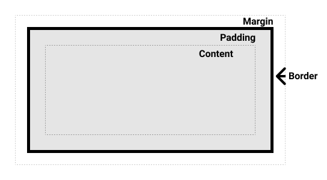

L3.Box
Everything in CSS has a box around it?
1.Overview
Boxes 同时有 inner display type和outer display type, 使用属性display可以控制outer display type by: display : block, display : inline(相当于行间公式和行内公式), 一个HTML元素默认的模式一般是block.
2.CSS box model
一个box从里到外包括了如下部份, width和height是content的大小:
.box {
width: 350px;
height: 150px;
padding: 25px;
border: 5px solid black;
margin: 10px;
}
虽然margin占了位置, 但我们一般不把margin算在box的大小里面, 而是将border当作计算box大小的边界.
CSS box还有alternative box model, 通过设置box-sizing: border-box打开:
.box {
box-sizing: border-box;
}
.box {
width: 350px;
height: 150px;
margin: 10px;
padding: 25px;
border: 5px solid black;
}上述的width和height是content+padding+border的大小
使用下面的操作将所有的元素的box model都设置为alternative box model:
html {
box-sizing: border-box;
}
*,
*::before,
*::after {
box-sizing: inherit;
}3.Margins, Padding, Borders
3.1.Margin
使用一个属性margin, 或者使用4个各个方向的属性margin-top, margin-right, margin-bottom, margin-left.
margin控制两个相邻box之间的距离, 如果是负数则会导致box相交
<div class="container">
<div class="box">Change my margin.</div>
</div>.container {
border: 5px solid blue;
margin: 40px;
}
.box {
border: 5px solid rebeccapurple;
background-color: lightgray;
padding: 10px;
height: 100px;
/* try changing the margin properties: */
margin-top: -40px;
margin-right: 30px;
margin-bottom: 40px;
margin-left: 4em;
}margin collapsing 计算两个相邻box之间间隔的距离:
- 如果两个box在相邻方向上的margin都是正数, then他们之间实际上相邻的距离为最大的那个
- 如果两个box在相邻方向上的margin都是负数, then他们之间实际上相邻的距离为最小的那个
- 如果两个box在相邻方向上的margin是一个正数和一个负数, then他们之间实际上相邻的距离为他们的和
3.2.Borders
border 在box的margin和padding中间
直接使用一个属性border, 或者使用更精确的border-top, border-right, border-bottom, border-left, border-width, border-style, border-color
<div class="container">
<div class="box">Change my borders.</div>
</div>body {
font-family: sans-serif;
}
.container {
margin: 40px;
padding: 20px;
border-top: 5px dotted green;
border-right: 1px solid black;
border-bottom: 20px double rgb(23 45 145);
}
.box {
padding: 20px;
background-color: lightgray;
border: 1px solid #333333;
border-top-style: dotted;
border-right-width: 20px;
border-bottom-color: hotpink;
}3.3.Padding
Padding 是border和content之间的区域, padding不能是负数
直接使用一个属性padding, 或者使用更精确的padding-top, padding-right, padding-bottom, padding-left.
4.Inline box element
span元素自动是inline模式, 这种情况下直接规定其margin等属性会导致上下文重叠:
<p>
I am a paragraph and this is a <span>span</span> inside that paragraph. A span
is an inline element and so does not respect width and height.
</p>body {
font-family: sans-serif;
}
p {
border: 2px solid rebeccapurple;
width: 200px;
}
span {
margin: 20px 30px;
padding: 10px 20px;
width: 80px;
height: 150px;
background-color: lightblue;
border: solid blue;
border-width: 7px 1px;
}将属性display: inline-block设置为inline-block可以自动调整上下文, 是的inline box不会和周围字符重叠:
span {
margin: 20px 30px;
padding: 10px 20px;
width: 80px;
height: 150px;
background-color: lightblue;
border: solid blue;
border-width: 7px 1px;
display: inline-block;
}